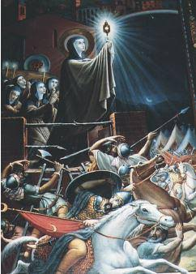
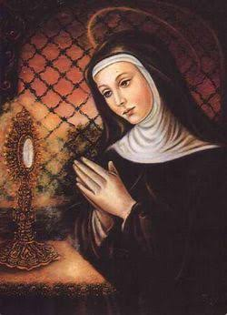
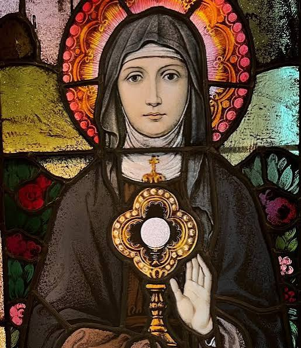

In September 1240, Saint Clare of Assisi saved her monastery and the town of Assisi from invading forces by confronting an army using only the Blessed Sacrament, a defining event recognized as the Eucharistic Miracle of Assisi.
During a conflict between Holy Roman Emperor Frederick II and Pope Gregory IX, mercenary Saracen soldiers advanced into the Valley of Spoleto. They laid siege to the Monastery of San Damiano, which housed Saint Clare and her community of Poor Clares.
Clare held the Blessed Sacrament high before the advancing troops. A sudden, mysterious panic gripped the army; the soldiers threw down their weapons and fled, entirely abandoning the assault. This is why Catholic art traditionally depicts Saint Clare holding a monstrance or pyx.